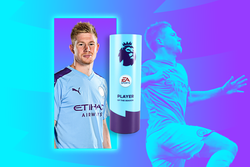

The 2021-22 Premier League was the 30th season of the Premier League, the top English professional league for association football clubs since its
establishment in 1992, and the 123rd season of top-flight English football overall. The start and end dates for the season were released on 25 March
2021, and the fixtures were released on 16 June 2021.
Champions!!
Manchester City secured a sixth Premier League title and eighth English league title overall on the final day of theseason; it was also the club's
fourth title in the last five seasons. Manchester City were the defending champions, having won their fifth Premier League title during the previous
season. The early title race was dominated by Liverpool, Manchester City and Chelsea, who were separated by two points by early December. By December,
Chelsea led the way following a run of just one defeat in 14 matches until a shock defeat to WestHam United gave City the edge. A run of 12 consecutive
victories, concluding in a victory over Chelsea that essentially ended their title hopes, gave Man City a 13 point lead by January (though Liverpool had
two games in hand due to COVID-19 postponements). Liverpool then went on a 10 game winning run, including both their games in hand, to cut City's lead to
a single point ahead of their meeting at the Etihad on 10 April. A 2-2 draw retained City's narrow lead going into the final weeks of the season. The
official overview of the season.
Top Four
With Chelsea securing a top-four finish for a fourth straight season, only Tottenham and Arsenal were in the hunt forthe final Champions League spot. Arsenal
were in 4th with three games remaining, but Arsenal's defeats against Tottenham in the North London derby and Newcastle in their final away game saw Tottenham
leapfrog them with one game remaining. Spurs just needed a point against already relegated Norwich on the final day to secure Champions League qualification for
the first time in three years, and won 5–0 with two goals from Son Heung-min, who secured a joint Golden Boot with Mohamed Salah. Arsenal failed to quality for the
Champions League for a fifth season, despite beating Everton 5–1. The full premier league table can be found here.
| Pos. |
Team |
Pld |
W |
D |
L |
Pts |
| 1 |
Man City |
38 |
29 |
6 |
3 |
93 |
| 2 |
Liverpool |
38 |
28 |
8 |
2 |
92 |
| 3 |
Chelsea |
38 |
21 |
11 |
6 |
74 |
| 4 |
Tottenham |
38 |
22 |
5 |
11 |
71 |
Relegations
Norwich City, who were promoted from the Championship last season, suffered relegation with four games to spare following a 10th loss in 12 matches against Aston Villa.
The next weekend Watford, who were also promoted, were the second to go down after defeat to Crystal Palace.
Burnley and Leeds went into the final day level on 35 points, with Burnley having the edge over Leeds due to a superior goal difference. Burnley fell behind 2-0 to Newcastle,
while a Raphinha penalty put Leeds ahead in the 54th minute. A 78th minute equaliser from Brentford and a Maxwel Cornet goal gave Burnley hope of survival, but an added time winner
from Jack Harrison confirmed safety for Leeds and relegated Burnley after six consecutive seasons in the Premier League.
The following teams are relegated from the premier league:
- Norwich City
- Watford
- Burnley
Awards
POTS
Kevin De Bruyne has been voted the 2021/22 EA SPORTS Player of the Season. De Bruyne joins an elite group of players to win
the award in more than one Premier League campaign, emulating Thierry Henry, Cristiano Ronaldo and Nemanja Vidic. The Belgian, who last won the prize in 2019/20, has been pivotal to a Manchester City side who
have lifted their sixth Premier League Trophy.

Golden Boot
The Golden Boot award was shared between Son Heung-min and Mohamed Salah after both players ended the 2021/22 season on 23 goals. Similarly Goalkeepers Alisson and Ederson could not be separated on the
final day and will share the Castrol Golden Glove award. The Brazilian pair went into Sunday's matches with 20 clean sheets each, and neither was able to add to that total. The full awards list can be
found on the Official Premier League site.